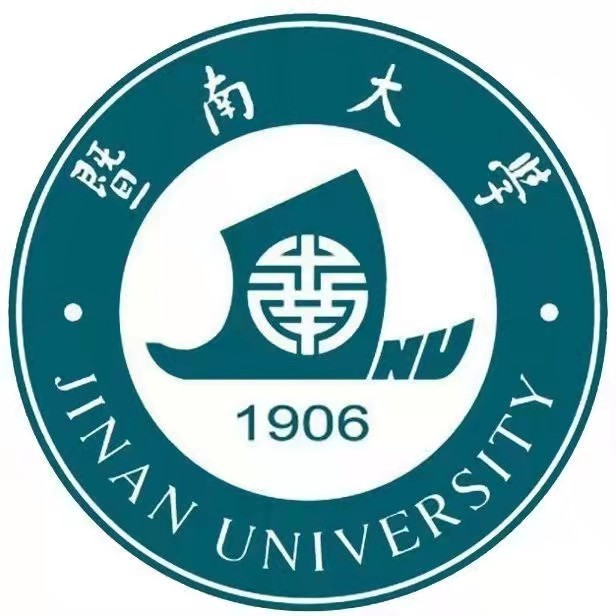

|
Duo Wu (吴铎)
About me
I am currently the second-year MPhil student in The Chinese University of Hong Kong, Shenzhen (CUHKSZ), supervised by Prof. Fangxin Wang.
Before that, I obtained my B.Eng. degree in Jinan University (JNU), where I was supervised by
Prof. Lin Cui.
I am also fortunate to work closely with Prof. Zhi Wang at
SIGS, Tsinghua University and Prof. Shuguang Cui.
My current research interests include the following topics:
I will graduate from CUHKSZ in 2024 summer and I am actively looking for suitable Ph.D. positions for 2024 fall!
Educations
|

|
Supervisor: Prof. Lin Cui
Major: Computer Science and Technology
GPA: 3.88/5.0 (Top 10%)
Honors: 2021-2022 University ‘5A’ Excellence Leadership Program – ‘Academic
Star’ (Nominated, Only 23 Awardee in JNU)
Awards: 2021-2022 University Scholarship of Innovative and Talented
Undergraduate (10000 RMB, Only 30 Awardee in JNU)
|
Publications
Duo Wu, Dayou Zhang, Miao Zhang, Ruoyu Zhang, Fangxin Wang, Shuguang Cui. ''ILCAS: Imitation
Learning-Based Configuration-Adaptive Streaming for Live Video Analytics with Cross-Camera Collaboration.''
under second round of review in IEEE Transactions on Mobile Computing (TMC), 2023. [CCF-A][arxiv]
Duo Wu, Lin Cui. "A Comprehensive
Survey on Segment Routing Traffic Engineering."
to appear in Digital Communications and Networks (DCN), 2022. [Q1][PDF]
See here for more details about the above publications and projects.
Competition Awards
During my undergraduate study, I had actively participated in many programming competition, which laid
me a solid background on programming and algorithm design. Here are the selected competition awards I won.
China Collegiate Algorithm Design & Programming Challenge Contest - Gold Prize, National Level (2021.06)
The 12th Lanqiao Cup Python Programming Competition (National Final) - First Prize, National Level
(2021.06)
Group Programming Ladder Tournament, TOP-competing Group of Guangdong Province - Group First
Prize, Provincial Level
(2020.12)
Guangdong Provincial Collegiate ACM Programming Competition - Bronze Prize, Provincial Level (2019.05)
The 7th ‘Huawei Cup’ ACM Programming Competition of Jinan University - First Prize, University Level (2019.04)
See here for more details.
Internship Experience
See here for more details.
Skills & Others
Standard tests: IELTS 7.0 (L: 7.5, R: 8.5, W: 6.5, S:5.5).
Programming languages: Python, C/C++, basic Java.
Deep learning toolkit: PyTorch, Tianshou (for DRL).
|